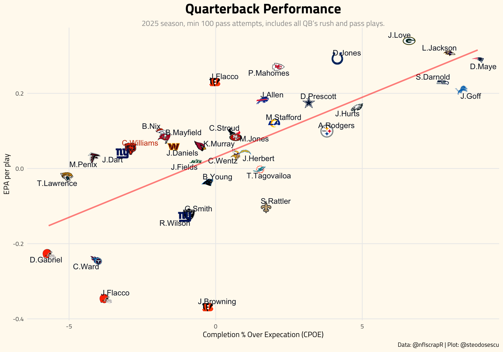
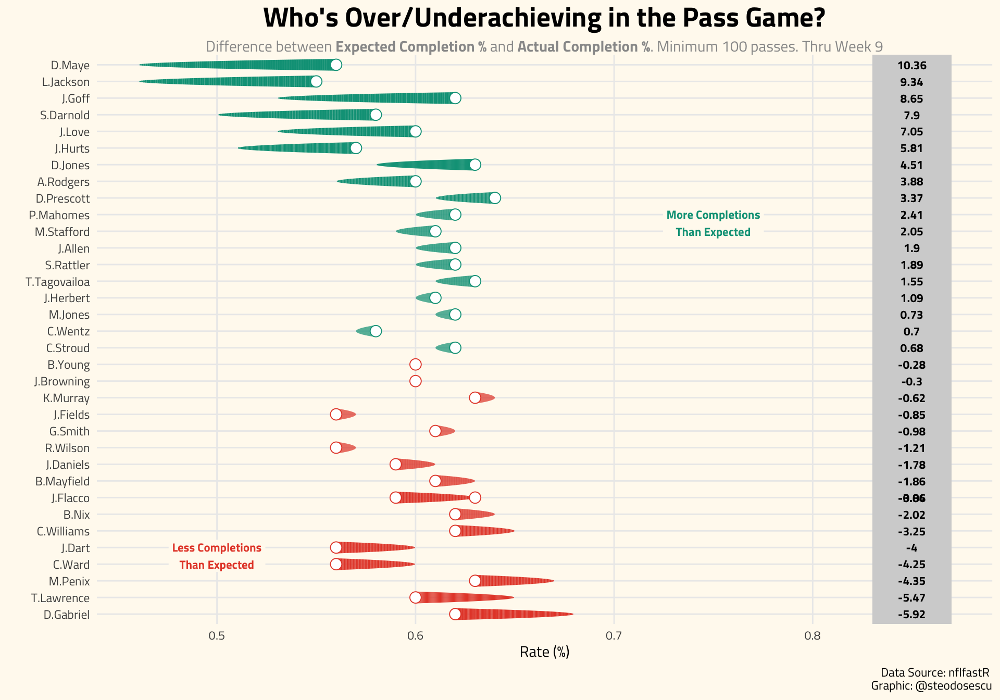
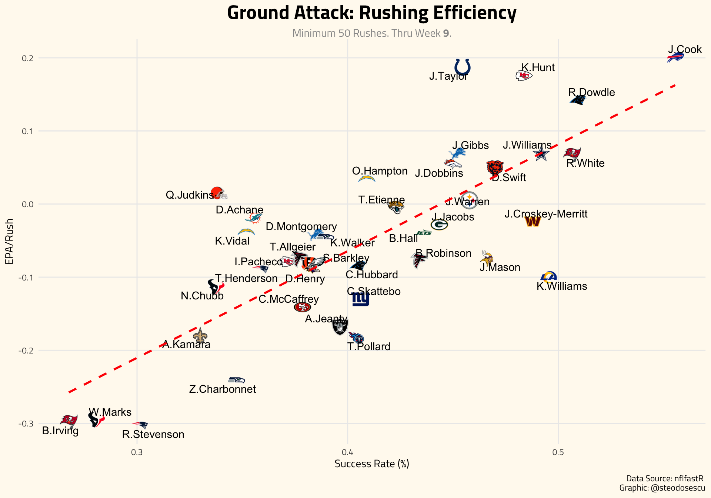

Players Weekly Report
Last updated: 2025-01-06
![logo]()
Below you’ll find figures showing key advanced metrics I’m tracking for individual players throughout the season.
Quarterback Performance
Quarterback Summary
The below shows a summary of QB performances so far this season.
| Quarterback Passing Summary | ||||||||||
| Minimum 200 pass yards, and ordered by passing TDs thrown. Thru Week 18. | ||||||||||
| Player | Team | Comps | Att | Pass Yds | Pass TDs | INTs | Comp % | Pass EPA | ||
|---|---|---|---|---|---|---|---|---|---|---|
| AFC - East | ||||||||||
 |
Josh Allen |  |
BUF | 224 | 332 | 2797 | 21 | 5 | 67.5% | 111.9 |
 |
Tua Tagovailoa |  |
MIA | 245 | 334 | 2526 | 17 | 1 | 73.4% | 104.2 |
 |
Aaron Rodgers |  |
NYJ | 260 | 412 | 2922 | 21 | 7 | 63.1% | 46.2 |
 |
Joe Milton III |  |
NE | 22 | 29 | 241 | 1 | 0 | 75.9% | 11.8 |
 |
Drake Maye | |
NE | 191 | 276 | 1930 | 13 | 9 | 69.2% | −0.3 |
 |
Tyler Huntley | |
MIA | 47 | 67 | 452 | 2 | 2 | 70.1% | −1.6 |
| AFC - North | ||||||||||
 |
Lamar Jackson |  |
BAL | 265 | 404 | 3489 | 34 | 4 | 65.6% | 136.8 |
 |
Joe Burrow |  |
CIN | 424 | 598 | 4573 | 41 | 9 | 70.9% | 123.0 |
 |
Justin Fields |  |
PIT | 47 | 66 | 557 | 2 | 1 | 71.2% | 11.8 |
 |
Russell Wilson | |
PIT | 154 | 229 | 1853 | 9 | 4 | 67.2% | 3.5 |
 |
Jameis Winston |  |
CLE | 159 | 259 | 1892 | 12 | 9 | 61.4% | −13.4 |
| AFC - South | ||||||||||
 |
C.J. Stroud |  |
HOU | 254 | 387 | 2892 | 14 | 10 | 65.6% | 29.4 |
 |
Trevor Lawrence |  |
JAX | 86 | 131 | 1133 | 6 | 3 | 65.6% | 25.5 |
 |
Mac Jones | |
JAX | 119 | 180 | 1221 | 6 | 5 | 66.1% | 22.4 |
 |
Joe Flacco |  |
IND | 108 | 157 | 1225 | 8 | 5 | 68.8% | 2.4 |
 |
Mason Rudolph |  |
TEN | 111 | 171 | 1182 | 8 | 8 | 64.9% | 1.2 |
 |
Anthony Richardson | |
IND | 46 | 83 | 688 | 4 | 4 | 55.4% | −1.4 |
 |
Will Levis | |
TEN | 79 | 126 | 1045 | 7 | 4 | 62.7% | −14.2 |
| AFC - West | ||||||||||
 |
Patrick Mahomes |  |
KC | 316 | 458 | 3268 | 19 | 5 | 69.0% | 86.4 |
 |
Justin Herbert |  |
LAC | 222 | 339 | 2786 | 15 | 1 | 65.5% | 80.7 |
 |
Bo Nix |  |
DEN | 302 | 441 | 3283 | 25 | 7 | 68.5% | 80.3 |
 |
Aidan O'Connell |  |
LV | 118 | 182 | 1280 | 7 | 2 | 64.8% | 12.8 |
 |
Desmond Ridder | |
LV | 23 | 39 | 208 | 1 | 2 | 59.0% | −7.5 |
 |
Gardner Minshew | |
LV | 152 | 214 | 1468 | 8 | 5 | 71.0% | −10.7 |
| NFC - East | ||||||||||
 |
Jayden Daniels |  |
WAS | 284 | 410 | 3149 | 24 | 8 | 69.3% | 72.8 |
 |
Jalen Hurts |  |
PHI | 156 | 221 | 2032 | 11 | 4 | 70.6% | 50.2 |
 |
Dak Prescott |  |
DAL | 131 | 197 | 1488 | 9 | 6 | 66.5% | 22.3 |
 |
Cooper Rush | |
DAL | 100 | 151 | 1107 | 7 | 1 | 66.2% | 15.6 |
 |
Marcus Mariota | |
WAS | 18 | 23 | 205 | 2 | 0 | 78.3% | 11.8 |
 |
Tanner McKee | |
PHI | 27 | 41 | 269 | 2 | 0 | 65.9% | 7.5 |
 |
Daniel Jones |  |
NYG | 122 | 187 | 1243 | 4 | 3 | 65.2% | 6.4 |
 |
Trey Lance | |
DAL | 20 | 34 | 244 | 0 | 0 | 58.8% | −2.6 |
 |
Drew Lock | |
NYG | 60 | 111 | 746 | 5 | 3 | 54.1% | −6.0 |
| NFC - North | ||||||||||
 |
Jared Goff |  |
DET | 342 | 479 | 4200 | 31 | 11 | 71.4% | 159.2 |
 |
Sam Darnold |  |
MIN | 312 | 445 | 3793 | 31 | 11 | 70.1% | 82.2 |
 |
Jordan Love |  |
GB | 199 | 310 | 2594 | 21 | 10 | 64.2% | 49.3 |
 |
Caleb Williams |  |
CHI | 199 | 308 | 2271 | 15 | 3 | 64.6% | 36.4 |
 |
Malik Willis | |
GB | 13 | 19 | 202 | 1 | 0 | 68.4% | 3.5 |
| NFC - South | ||||||||||
 |
Baker Mayfield |  |
TB | 310 | 434 | 3656 | 33 | 14 | 71.4% | 122.4 |
 |
Kirk Cousins |  |
ATL | 258 | 383 | 3068 | 16 | 12 | 67.4% | 47.9 |
 |
Derek Carr |  |
NO | 114 | 166 | 1454 | 8 | 3 | 68.7% | 41.0 |
 |
Bryce Young |  |
CAR | 130 | 208 | 1458 | 10 | 4 | 62.5% | 15.3 |
 |
Andy Dalton | |
CAR | 77 | 115 | 760 | 7 | 3 | 67.0% | 11.5 |
 |
Michael Penix Jr. | |
ATL | 58 | 100 | 737 | 3 | 3 | 58.0% | 11.4 |
 |
Spencer Rattler | |
NO | 68 | 118 | 701 | 3 | 4 | 57.6% | −30.6 |
| NFC - West | ||||||||||
 |
Brock Purdy |  |
SF | 254 | 378 | 3469 | 19 | 10 | 67.2% | 95.2 |
 |
Kyler Murray |  |
ARI | 289 | 412 | 3053 | 17 | 9 | 70.1% | 70.8 |
 |
Matthew Stafford |  |
LA | 265 | 392 | 2966 | 17 | 6 | 67.6% | 44.9 |
 |
Geno Smith |  |
SEA | 357 | 511 | 3840 | 20 | 13 | 69.9% | 38.8 |
 |
Jimmy Garoppolo | |
LA | 27 | 41 | 334 | 2 | 1 | 65.9% | 3.0 |
 |
Joshua Dobbs | |
SF | 29 | 43 | 326 | 2 | 2 | 67.4% | 2.8 |
| Table: @steodosescu | Data: nflfastR | ||||||||||
EPA per Dropback by Team
The below isolates Expected Points Added for pass plays only to get a sense of how each team’s quarterback is performing on a per-dropback basis.

EPA vs CPOE per dropback by team
The below is another way to look at quarterback efficiency using EPA and Completion Percentage Over Expectation (CPOE) as measures. CPOE is simply the difference between a quarterback’s expected completion percentage and actual completion percentage. Expected completion percentage is a stat measuring the likelihood of a given pass being completed which factors in features like depth of target (air yards). It’s a better measure of accuracy than traditional completion percentage because it takes into account the location of where passes are being thrown.
Here we focus on quarterback play only as the QB position is the most valuable position on the field. As the quarterback goes, the team goes.

Difference in Expected and Actual Yards
The below shows what quarterbacks have completed a either higher percentage or lower percentage of their passes than expected, according to the nflfastR model.

Receivers Performance
Receivers average Depth of Target (aDOT) vs. Catch Rate
The below shows receiver catch rate against their average depth of target (air yards).

Rushing Performance
The below shows a rusher’s success rate vs his total EPA gained on runs this season.

Copyright © 2021 Stephan Teodosescu